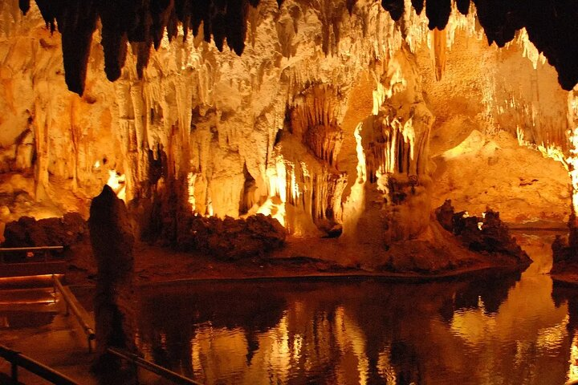
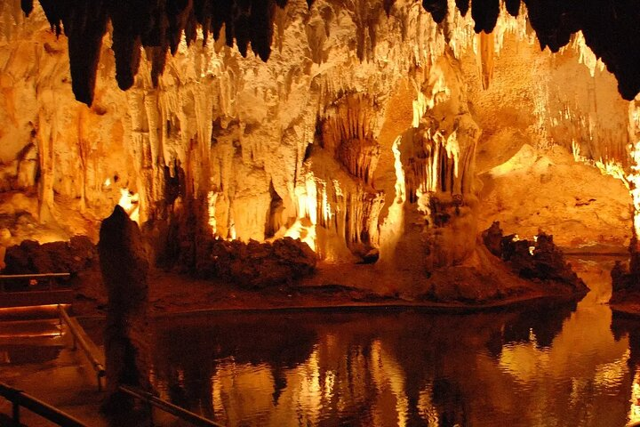
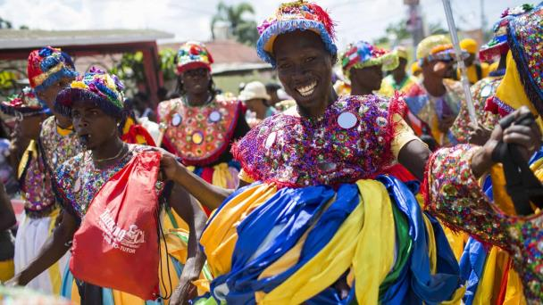
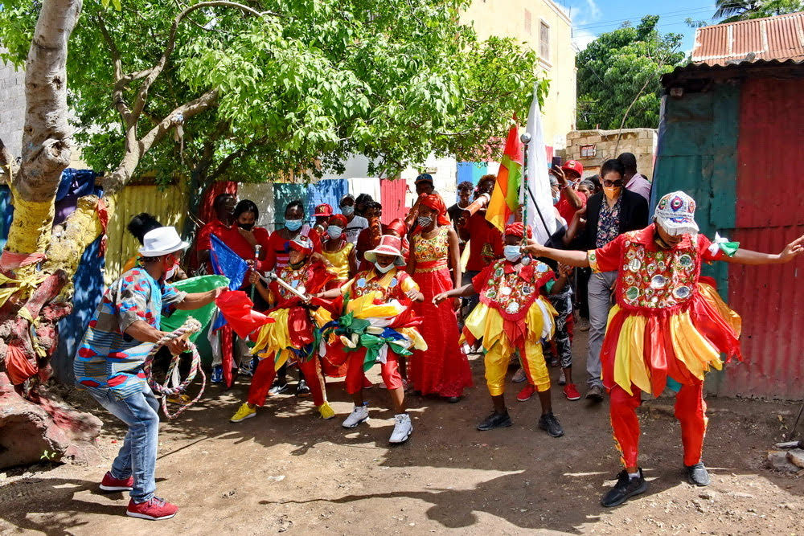
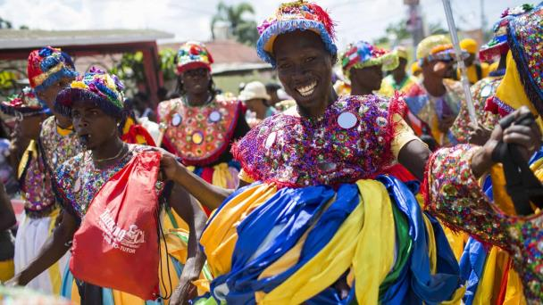
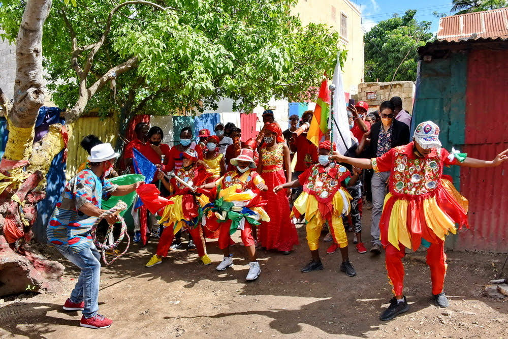

Sitios Turísticos
Cueva de las Maravillas
Una cueva subterránea con impresionantes formaciones naturales y arte taíno.
Playas Juan Dolio
Playas hermosas con arena blanca y aguas cristalinas, perfectas para relajarse.
Catedral San Pedro Apóstol
Un símbolo icónico de la ciudad, con arquitectura gótica impresionante.
Museo de Historia
Una cueva subterránea con impresionantes formaciones naturales y arte taíno.
Centro Histórico Ron Barceló
Playas hermosas con arena blanca y aguas cristalinas, perfectas para relajarse.
Reserva Natural Río Cumayasa
Un símbolo icónico de la ciudad, con arquitectura gótica impresionante.
Tradiciones y culturas
Descubre la esencia vibrante de San de Macorís, donde las tradiciones y culturas se entrelazan en un abrazo eterno.
 

 



Misión, visión y valores
Misión: Nuestra misión es promover y preservar la riqueza cultural y turística de San Pedro de Macorís, ofreciendo a los visitantes una experiencia única que resalte su historia, tradiciones y atractivos.
Visión: Aspiramos a ser el principal referente de referencia para buscar información sobre San Pedro de Macorís, contribuyendo al desarrollo sostenible de la región y fomentando un turismo responsable.
Valores: Nos guía la pasión por la cultura, el respeto por el patrimonio local, la sostenibilidad y el compromiso con la excelencia en el servicio. Estos valores nos consolidan tanto para los turistas como para los habitantes de la ciudad.